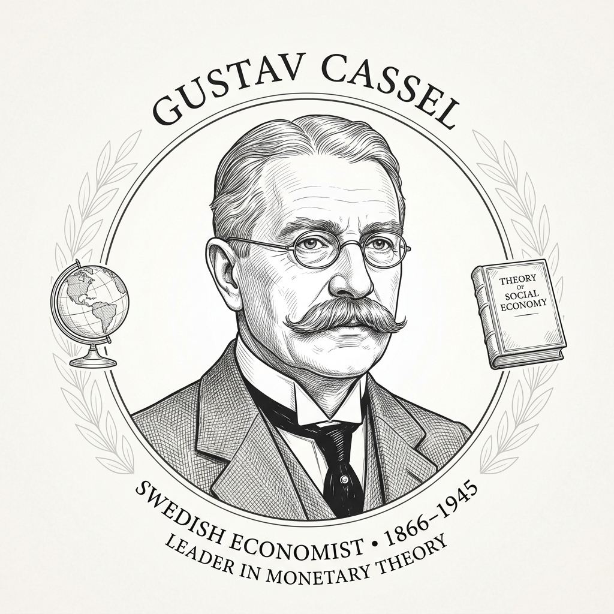

💡 외환 시장과 환율의 기초 개념과 학습 로드맵
국가 간 교역에서 빼놓을 수 없는 외환의 속성과 환율의 기초 원리를 마스터해 봅시다.
교과서 핵심 길잡이
국가 간의 거래에서 결제 수단으로 사용되는 외국의 화폐나 수표 등을 이라 하고, 이를 거래하는 시장을 이라고 합니다.
서로 다른 국가 화폐 간의 교환 비율로, 쉽게 말해 '외국 통화($1)라는 상품의 원화 가격'을 뜻합니다. (예: 1달러 = 1,300원)
경제학 역사 돋보기 프로필 클릭

구스타브 카셀"통화의 가치는 그 통화가 구매할 수 있는 재화의 양, 즉 구매력에 의해 환율이 수렴한다는 구매력 평가설(PPP)을 제시했습니다."
"정부가 고정환율을 고수하는 것보다는 시장의 수급 원리에 의해 환율이 결정되는 변동환율제도가 세계 자원의 효율성에 적절합니다."
화폐의 다양성과 기축통화의 이해
우리나라가 원화를 사용하는 것처럼 미국은 달러화, 중국은 위안화를 사용합니다. 여러 국가가 존재하는 만큼 다양한 종류의 화폐가 존재하는 것입니다. 하지만 화폐의 다양성은 원활한 무역을 가로막는 장벽이 될 수 있습니다. 외국에 수출하고 그 대금을 외환으로 받을 경우, 자국에서 직접 사용하기 어렵기 때문입니다. 이로 인해 자연스럽게 외환과 국내 통화 사이의 교환이 필요하게 되는데, 이러한 거래가 이루어지는 곳이 외환 시장입니다.
국가 간의 거래나 금융 결제에서 기본이 되는 화폐를 라고 하며, 현재 대표적인 기축통화는 미국의 입니다. 기축통화는 신용도가 높고 전 세계 어디서나 통용되며, 국제 무역 결제 및 주요 원자재(원유 등) 거래의 기준 화폐 기능을 수행합니다.
기축통화(Key Currency)의 심층 탐구 심화 학습
제2차 세계대전 말기인 1944년, 미국 뉴햄프셔주의 에서 44개국 대표가 모여 새로운 국제 통화 질서를 구축했습니다. 미국 달러화를 금에 고정하고(금 1온스 = 35달러), 다른 나라의 화폐 가치를 달러화에 연동하면서 미국 달러화가 세계 유일의 기축통화로 확립되었습니다.
기축통화국은 화폐를 발행하는 비용(액면가에서 제조원가를 뺀 값)만큼의 이득인 를 누릴 수 있습니다. 미국은 달러화를 추가로 찍어내는 것만으로도 해외의 상품과 서비스를 수입하고 대외 적자를 메울 수 있는 막강한 특권을 가집니다.
- 압도적인 경제력 및 무역 규모: 세계 총생산(GDP) 및 국제 교역에서 차지하는 비중이 매우 커야 합니다.
- 자유롭고 발달된 자본 시장: 자본의 유출입이 자유롭고, 외환 거래 규제가 없어야 합니다.
- 가치의 안정성 및 높은 신뢰도: 인플레이션 등으로 가치가 급락하지 않고 전 세계가 믿고 보유할 수 있어야 합니다.
- 강력한 국력과 군사력: 국제 질서와 평화를 유지할 수 있는 물리적 힘이 뒷받침되어야 합니다.
달러화에 버금갈 정도로 국제 거래 결제나 각국 외환보유고에서 큰 비중을 차지하는 화폐입니다. 대표적으로 유럽연합(EU)의 , 일본의 엔화, 영국의 파운드화, 중국의 위안화 등이 여기에 해당합니다.
수업+ 통화 코드
외국 화폐는 국내에서 그대로 사용할 수 없기 때문에, 외환 시장에서 통화를 교환해야 합니다. 이에 따라 국제적으로 통일된 통화 표기 방식이 필요해졌고, 국제표준화기구(ISO)는 국제 무역과 금융 거래를 원활하게 하기 위해 ISO 통화 코드를 만들었습니다.
각국의 통화 코드는 알파벳 세 글자로 구성되며, 첫 두 글자는 국가명, 세 번째 글자는 화폐 단위를 나타냅니다. 예를 들어, 한국의 통화 코드 KRW에서 KR은 Korea, W는 원(Won)을 의미합니다. 마찬가지로 미국 달러는 USD(United States Dollar), 일본 엔화는 JPY(Japanese Yen)로 표기됩니다. 이러한 통화 코드는 외환 시장에서 통화 간 교환을 더 효율적으로 진행할 수 있도록 돕습니다.
설명을 바탕으로 아래 주요 국가들의 통화 코드를 알맞게 작성해 보세요. (대문자로 입력)
• 우리나라 돈과 외국 돈의 교환 비율을 이라고 합니다. 이는 국내 외환 시장에서 달러화 등 외화 1단위를 얻기 위해 지불해야 하는 자국 통화의 양이며, 우리나라 돈으로 외국 돈을 사는 것과 같습니다.
• 달러가 필요한 경우 (달러의 수요): 국민들이 해외 여행을 가거나 해외 물품을 직구할 때, 또는 해외 주식을 할 때 국내 시장에서 달러를 구매하려고 하므로 달러의 수요가 발생합니다.
• 달러가 유입되는 경우 (달러의 공급): 국내 기업이 물품을 해외에 하거나 외국인 관광객이 국내로 여행을 올 때 외화가 국내로 들어오므로 달러의 공급이 발생합니다.
• 국민들의 해외 여행이나 해외 주식 매수 등으로 인해 외환 시장에서 달러를 구매하려는 수요가 늘어나면 달러의 수요 곡선이 으로 이동합니다.
• 반대로, 국내 기업의 수출 증가로 달러 유입이 늘어나면 외환 시장에서 달러의 이 증가하여 공급 곡선이 우측으로 이동합니다.
• 원/달러 환율이 1,200원에서 1,300원으로 변하는 현상은 환율이 한 것이며, 이는 달러 대비 우리나라 원화의 가치가 했음을 의미합니다. (이때, 환율 상승은 미국 달러 가치의 상승과 완벽히 같은 방향입니다.)
• 또한, 환율이 상승하면 해외 시장에서 우리 수출품의 가격이 하여 수출이 하고, 반대로 수입품의 원화 가격은 하여 수입이 하게 됩니다. 그 결과, 수출액에서 수입액을 뺀 은 하게 됩니다.
• 환율이 상승하면 해외에서 들어오는 수입 원자재의 원화 환산 가격이 올라가므로, 전반적인 국내 물가가 하는 부작용이 있습니다.
핵심원리! '환율'과 '미국 달러 가치'는 항상 같은 방향(동행 관계)으로 움직이고, '우리나라 원화 가치'만 반대 방향(역의 관계)으로 움직입니다.
환율은 '외국 돈 1달러를 사기 위해 필요한 우리나라 원화의 가격(몸값)'이기 때문에, 환율의 움직임은 곧 달러의 몸값(가치) 변화와 완벽하게 비례합니다.
• 달러 가치 (같은 방향): 1달러의 몸값이 더 비싸짐 (달러 강세 / 상승)
• 원화 가치 (반대 방향): 1달러를 살 때 더 많은 원화(100원 추가)를 건네줘야 하므로 원화 구매력 약화 (원화 약세 / 하락)
• 달러 가치 (같은 방향): 1달러의 몸값이 더 저렴해짐 (달러 약세 / 하락)
• 원화 가치 (반대 방향): 1달러를 살 때 더 적은 원화(100원 절약)만 줘도 되므로 원화 구매력 강화 (원화 강세 / 상승)
미니 시뮬레이터 — 환율 변동과 지갑 속 원화 가치 직접 계산해보기
① 상품 가격 입력 → ② 환율 슬라이더 조절 → ③ 결제 금액·가치 변화 확인
환율과 달러 가치는 같은 방향으로 움직이고,
원화 가치만 반대 방향으로 움직입니다.
💱 외환 시장의 수요·공급 및 균형 환율
외환 시장에서 수요와 공급의 상호작용을 통해 환율이 어떻게 결정되고 변동하는지 시각화 그래프와 함께 탐구합니다.
외환의 수요 (Demand)
외환 시장에서 를 (달러)로 바꾸고자 하는 거래를 말하며, 국내 외환 시장에 달러가 필요한 요인이 발생할 때 나타납니다.
- 상품 및 서비스 수입: 해외 물품이나 서비스를 수입하고 대금을 달러로 지급할 때
- 해외 여행 및 유학: 국민들이 해외로 여행을 가거나 유학 자금을 송금할 때
- 해외 자산 투자: 국내 자본이 해외 주식, 채권, 부동산을 매수할 때
- 외채 상환: 해외 차관이나 대외 부채의 원리금을 상환할 때
외환의 공급 (Supply)
외환 시장에서 (달러)를 로 바꾸고자 하는 거래를 말하며, 국내 경제로 달러가 유입되는 요인이 발생할 때 나타납니다.
- 상품 및 서비스 수출: 국내 기업이 물품이나 서비스를 해외에 수출하고 달러 대금을 받을 때
- 외국인 국내 여행: 외국인들이 한국으로 여행을 와서 달러를 원화로 환전할 때
- 외국 자본 유입: 외국인 투자자가 국내 주식, 채권, 부동산을 사기 위해 달러를 들여올 때
- 차관 도입 및 직접 투자: 해외 기업이 국내에 공장을 짓거나(FDI) 해외 자금을 차입할 때 차관(Loan)이란 한 나라의 정부나 기업이 외국 정부나 금융기관으로부터 장기적으로 자금을 빌려오는 것을 뜻합니다.
외환 수요 증가와 환율
해외 여행 증가, 해외 물품 수입 증가 등으로 달러 수요가 늘어나면 외환 수요 곡선이 으로 이동합니다. 이에 따라 균형점은 우상향 이동하고, 환율은 하게 됩니다.
외환 수요 감소와 환율
해외 여행 감소, 해외 물품 수입 감소 등으로 달러 수요가 줄어들면 외환 수요 곡선이 으로 이동합니다. 이에 따라 균형점은 좌하향 이동하고, 환율은 하게 됩니다.
외환 공급 증가와 환율
국산품의 수출 증가, 외국인 관광객 증가 등으로 달러 공급이 늘어나면 외환 공급 곡선이 으로 이동합니다. 이에 따라 균형점은 우하향 이동하고, 환율은 하게 됩니다.
외환 공급 감소와 환율
국산품의 수출 감소, 외국인 관광객 감소 등으로 달러 공급이 줄어들면 외환 공급 곡선이 으로 이동합니다. 이에 따라 균형점은 좌상향 이동하고, 환율은 하게 됩니다.
📰 현실 경제 뉴스 룸: 환율 변동 트리거 사건
미 5월 고용 '깜짝 증가'… 연준 금리인상 예상 고조
"미국의 5월 비농업 부문 신규 일자리가 예상을 큰 폭으로 웃돌며 깜짝 증가했습니다. 이에 따라 연방준비제도(Fed)가 추가 금리 인상이나 고금리 기조를 지속할 가능성이 더 커졌다는 예상이 나옵니다."
Q. 미국의 고금리 지속 시, 글로벌 자본 유출로 국내 시장의 달러 공급은 하고, 자금 이탈용 환전 수요는 하여 환율은 어떻게 될까요?
반도체 수출 호재에 원화 가치 회복 기대… 연말 1400원선 전망
"인공지능(AI) 수요 확대에 따른 반도체 수출 증가와 무역수지 개선 등 국내 경제의 펀더멘털 강화가 반영되면서, 외환 유입 확대에 따른 원화 가치 회복 기대감이 커지고 있습니다."
Q. 반도체 수출 호조는 우리나라 외환 시장의 달러 을 증가시켜, 공급 곡선을 우측으로 이동시키며 환율을 시킵니다.
‘달러 유출’ 서학개미 탓했는데… 국내상장 美 ETF가 진짜 주범
"국내 주식시장에 상장된 해외 ETF(해외 주식형 ETF 등)의 순자산이 급증하며 투자금이 대거 유입되었습니다. 운용사가 해외 주식을 매수하기 위해 원화를 달러화로 환전해야 하므로 외화 유출을 자극하고 있습니다."
Q. 국내 상장 미국 ETF로의 투자 증가세는 국내 외환 시장에서 해외 자산 매수용 달러 를 증가시킵니다.
1560원 뚫은 달러·원 환율… 중동 전쟁·외국인 매도에 17년 만 최고
"중동 전쟁 장기화에 따른 지정학적 불안과 고금리/강달러 상황 하에, 국내 증시에서 외국인 투자자들이 대규모 국내 주식을 매도(자금 유출)하여 환전용 달러 수요가 급증하며 환율이 1,560원을 돌파했습니다."
Q. 지정학적 불안과 외국인 주식 매도(자금 유출)는 국내 외환 시장에서 달러 의 증가를 유도하여 수요 곡선을 으로 이동시킵니다. 이에 따라 환율은 하게 됩니다.
환율 변동이 국내 경제에 미치는 심층적 의미
탐구: "환율 상승은 무조건 부정적이고, 환율 하락은 무조건 긍정적일까요?"
- 💡 긍정적 측면 (유리): 우리 수출품의 해외 현지 외화 표시 가격이 싸져 가격 경쟁력이 생기고, 수출 기업의 원화 환산 매출액과 마진이 늘어납니다.
- ⚠️ 부정적 측면 (불리): 수입하는 가스, 석유, 원자재 등의 원화 가격이 비싸져 국내 소비자 물가가 치솟고, 달러로 빚을 진 기업들의 상환 부담이 늘어납니다.
- 💡 긍정적 측면 (유리): 에너지 및 수입 원자재 가격이 싸져 국내 장바구니 물가가 하락 안정되고, 외화 부채 부담이 줄어들며, 국민의 해외 여행이나 직구 여력이 늘어납니다.
- ⚠️ 부정적 측면 (불리): 우리 수출품의 가격 경쟁력이 떨어져 해외 판매가 부진해지고, 똑같은 달러를 벌어도 원화 환산 마진이 쪼그라들어 대외 무역 수지가 나빠집니다.
📌 핵심 정리: 즉, 환율의 변동 방향 자체가 '좋다' 혹은 '나쁘다'로 고정된 정답은 존재하지 않으며, 각각의 환율 변화마다 이득을 보는 주체와 피해를 입는 주체가 정반대로 작용합니다. 따라서 국가 경제 관점에서의 가장 이상적인 환율은 일방적인 고/저 환율이 아니라, 우리 경제 체력에 맞춰 급변하지 않고 완만하고 안정되게 유지되는 흐름입니다.
흔히 환율이 오르면(원화 가치 하락) 우리 수출 상품의 외화 표시 가격이 낮아져 수출 대기업들이 큰 이득을 얻는다고 배웁니다. 하지만 실제 현실 경제에서는 원자재 및 중간재의 해외 수입 의존도가 매우 높기 때문에 고환율 상태가 지속되면 생산 비용(원가)이 감당하기 힘들 정도로 치솟는 부작용이 생깁니다.
즉, 무조건적인 고환율이 무역 수출에 유리하다는 도식적 설명은 글로벌 가치사슬망이 촘촘해진 현대 경제에서는 오히려 기업을 위기에 빠뜨릴 수도 있습니다.
금융 경제 사전: 매파(Hawks) vs 비둘기파(Doves)
뉴스에서 금리 정책을 논할 때 자주 등장하는 용어입니다. 중앙은행 통화정책 기조에 따라 외환 시장과 환율의 방향이 크게 좌우됩니다.
- 🎯 핵심 목표: 물가 안정 (인플레이션 억제)
- 🛠️ 주요 수단: 기준금리 인상, 통화량 축소 (긴축 정책)
- 🦅 입장과 비유: 하늘 높이 날며 먹잇감을 낚아채는 매처럼, 강력한 금리 인상으로 거품(인플레이션)을 잡아야 한다고 주장합니다.
- 💱 외환시장 영향: 자국 금리 인상 ➔ 해외 자본 유입 ➔ 자국 화폐 가치 상승 (환율 하락 요인)
- 🎯 핵심 목표: 경기 부양 및 고용 증대 (경제 성장)
- 🛠️ 주요 수단: 기준금리 인하, 통화량 확대 (완화 정책)
- 🕊️ 입장과 비유: 평화를 상징하는 비둘기처럼, 부드러운 통화 완화(낮은 금리)를 통해 가계와 기업의 숨통을 틔우고 경기를 살려야 한다고 봅니다.
- 💱 외환시장 영향: 자국 금리 인하 ➔ 자본 유출 우려 ➔ 자국 화폐 가치 하락 (환율 상승 요인)
⚖️ 환율 변동에 따른 경제주체 영향 시뮬레이터
환율 상승(원화 가치 하락) 혹은 환율 하락(원화 가치 상승) 시 개별 경제적 주체들이 마주하는 손익 양상을 파악하세요.
시뮬레이션 경제 효과 점검
• 환율이 상승하여 원화 가치가 하면 수출 기업은 해외 경쟁력 면에서 해지고, 수입 기업과 유학생 송금 학부모는 비용 증가로 해집니다.
• 반대로 환율이 하락하여 원화 가치가 하면 수출 기업은 해외 경쟁력 면에서 해지고, 수입 기업과 유학생 송금 학부모는 비용 절감으로 해집니다.
📈 외환시장 그래프 (Forex)
하단의 제어 슬라이더나 버튼을 클릭하여 공급(S)과 수요(D) 곡선이 평행 이동하는 현상과 균형 가격을 분석해 보세요.
수급 제어 패널
• 달러 공급이 증가할 때 공급 곡선 S0는 S1으로 이동하며, 새로운 균형점에서 환율은 합니다.
• 달러 수요가 증가할 때 수요 곡선 D0는 D1으로 이동하며, 새로운 균형점에서 환율은 합니다.
📝 수능 및 내신 실전 기출 실전평가
단계를 밟아가며 빈칸을 풀고 정답을 도출해 제출하세요.
3일 동안의 원/달러 환율 변동 추이
| 구분 | 1일차 | 2일차 | 3일차 |
|---|---|---|---|
| 원/달러 환율 | 1,200원 | 1,400원 | 1,100원 |
정답 선택
🎉 정답입니다! (선택한 답: ④)
[해설] 환율 변동 추이 데이터 해석
- 환율이 3일차에 1,100원으로 크게 하락하는 것은 원화의 가치 상승을 의미합니다.
- ④ (정답): 달러 대비 원화 가치가 강세가 되면, 한국을 여행하는 미국인 관광객이 $1를 원화로 환전 시 수령액이 1,400원에서 1,100원으로 쪼그라듭니다. 이에 따라 한국 현지 숙식비 등의 실질 구매 경비 부담이 가중되어 관광객에게는 불리합니다.
- ①, ② 환율 상승 시 원화 가치는 하락하고 수입품 가격은 상승해 수입 기업에 불리합니다.
- ③ 3일차 환율 하락 시 미국 유학 자금 송금 가계의 재정 부담은 완화됩니다.
📖 학습 정리 — 핵심 개념을 나의 말로 정리하기
각 주제의 핵심 질문에 스스로 답해보세요. 정리한 내용은 저장 버튼으로 기록할 수 있습니다.
Q1 '외환'이란 무엇인지, 그리고 '외환 시장'이 왜 필요한지 나의 말로 설명해보세요.
Q3 달러의 '수요'가 발생하는 상황을 3가지 구체적인 예시를 들어 설명하세요.
Q4 달러의 '공급'이 증가하는 상황을 3가지 예시로 쓰고, 공급 증가가 환율에 미치는 영향을 그래프 관점에서 설명하세요.
Q5 원/달러 환율이 1,200원에서 1,400원으로 변했을 때, 달러 가치와 원화 가치가 각각 어떻게 변하는지 이유와 함께 설명하세요.
Q6 '환율과 달러 가치는 동행하고, 원화 가치는 역행한다'는 핵심 원리를 사과 비유를 활용해 나만의 언어로 설명해보세요.
Q7 환율이 상승할 때 수출과 수입, 그리고 순수출이 어떻게 변하는지 그 과정을 단계적으로 서술하세요.
Q8 환율 상승이 국내 물가에 미치는 부작용을 구체적으로 설명하고, 이것이 왜 '부작용'인지 이유를 쓰세요.
저장된 내용은 브라우저를 닫아도 유지됩니다.
Q1 '외환'이란 무엇인지, 그리고 '외환 시장'이 왜 필요한지 나의 말로 설명해보세요.
Q3 달러의 '수요'가 발생하는 상황을 3가지 구체적인 예시를 들어 설명하세요.
Q4 달러의 '공급'이 증가하는 상황을 3가지 예시로 쓰고, 공급 증가가 환율에 미치는 영향을 그래프 관점에서 설명하세요.
Q5 원/달러 환율이 1,200원에서 1,400원으로 변했을 때, 달러 가치와 원화 가치가 각각 어떻게 변하는지 이유와 함께 설명하세요.
Q6 '환율과 달러 가치는 동행하고, 원화 가치는 역행한다'는 핵심 원리를 사과 비유를 활용해 나만의 언어로 설명해보세요.
Q7 환율이 상승할 때 수출과 수입, 그리고 순수출이 어떻게 변하는지 그 과정을 단계적으로 서술하세요.
Q8 환율 상승이 국내 물가에 미치는 부작용을 구체적으로 설명하고, 이것이 왜 '부작용'인지 이유를 쓰세요.
저장된 내용은 브라우저를 닫아도 유지됩니다.